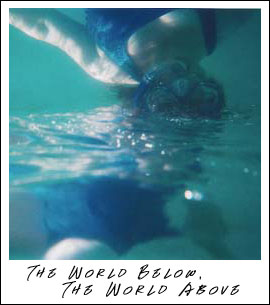

#49: Postcard from Kaua'iAnother installment of Trials, Triumphs and Trivialities Dear Friends, As I write this letter, I'm sitting in a pleasant little condominium on the Garden Isle of Kaua'i. You won't receive it until I'm already back on The Mainland. But, that's how postcards work. They're a form of time travel. This vacation, which I'm sharing with my wonderful wife, has been much needed. I'm looking forward to returning to good 'ole Skotos Tech relaxed and refreshed. It probably won't surprise you to hear that despite the relaxation and non-worked-ness of the last few weeks my mind has occasionally drifted to questions of storytelling. In particular I've been thinking about one particular axiom of storytelling that I've read at least a half-dozen times. It goes like this: Write what You Know.It's a nice little motto whose application is fairly obvious. Don't write about businessmen unless you're an MBA. And don't write about science unless you're a scientist. It's also a load of crap. Like many of you, my storytelling interest centers on "speculative" fiction: science fiction, fantasy, and horror. And, I think it's pretty unreasonable to expect an SF writer to tour the galaxy before describing it. Even more, I definitely don't want to have my brain sucked out by an eldritch horror before I describe that experience. However, there is a grain of truth to be found in the old adage. Although a writer may not need to have experienced everything he later narrates, conversely he's going to be a pretty boring storyteller if he spends his life in his two-bedroom apartment, avoiding crowds and sticking to his familiar, comfortable life. As writers — and storytellers and game designers and narrators and programmers — we need to be aware that the world is full of totally different experiences. The things I take for granted in Berkeley, California, USA, would be totally alien in Afghanistan or Russia... ... or even in Hawai'i. And that's what I've been reminded of while hiking, sleeping, swimming, sunning, and snorkeling in Hawai'i. In the last week and a half, here in Kaua'i, I've experienced things that aren't exactly mind boggling, but which do make me stop and think about my perception of the world. I'd like to share those interesting thoughts with you, hopefully to make you stop and think too. How's that for a great excuse for a vacation slideshow? The things I'm discussing here are the tools of the game developer. How do you create unique worlds, unique societies, and unique cultures, which are more than just carbon copies of your own? Live Widely. Life is a Foreign LanguageUpon arriving in the Hawai'ian islands, one of the first things you note is the alien sounds of the place names: Hawai'i, Oahu, Kaua'i, Poipu, and Koala. It's a different language, but it's more than that. It's actually a different palette of sounds. There are only 12 letters in the Hawai'ian alphabet: AEIOUHKLMNPW. Words are pronounced differently. Vowels are always pronounced, even if there are several in sequence, and they tend to end syllables — you won't find any silent "e"s drawing syllables out like you have in English. A book on the Hawai'ian language actually lists a set of rules for the Hawai'ian language:
The word "pipeline", if it were Hawai'ian, would be pronounced pee-pay-lee-nay. Strangely enough, I've found that I've started pronouncing unfamiliar words the Hawai'ian way after just a bit more than a week here. And this all makes you think about how you can create a truly unique language in one of your own worlds:
Really, these are all rules; they're all specific ways we can look the world. That these rules and these perceptions are different in the Hawai'ian language just underlines my earlier point: Think Differently.The World AboveStepping outside your ordinary life, you see that it's not just the rules of life that change — and not just your perceptions — but also the world itself. In Berkeley a storm sends me running for cover. It's wet and cold and generally unpleasant. Dancing through the storm like a 1950s movie icon just invites pneumonia. In Hawai'i, on the other hand, a storm is like a passing dream. It's warm and pleasant, just barely noticeable in the humid Hawai'ian air. And, it'll be past in fifteen minutes, unlike the day-long fronts of the Bay Area. What does weather mean? is just one of the questions a game developer can ask. (What does anything mean? Your answer at home is not the universal one, and thus not necessarily the best one for a story.) The very act of going outside is different in Hawai'i. At home I'd take a moment to decide if I needed a wind breaker or not, then race out the door. In Kaua'i, even in November, the rays of the tropical sun are fierce. Thus there's a half-hour long ritual of sun-screen slathering that's required to avoid second-degree burns. We all grow used to the climatic necessities of our own worlds, but what sun-screen slathering, cold-weather bundling, or wet-weather covering might be required in other places? The World BelowIf there's one thing that's truly amazed me on this trip, it's snorkeling. Although I've always been a swimmer — there's humorously enough a swimming trophy on my mantle, recognition of some deed two decades past now — I'd never before slapped on a face plate and slipped down under the waves. I'm used to living in a world where I think I can perceive everything nearby. Walking down in Shattuck in Berkeley I can perceive cars, pedestrians, and bicyclists alike, and feel like I know the world around me. Slipping my head beneath the waves, however, I saw that there was a whole other world down there. In many ways it was actually richer than the world above, abundant with life due to the lack of strip malls, tract homes, and diesel fumes. There were fish... by the boatload... and algae-covered rocks and sea plants tucked away into cracks and crevices and huge coral formations, blossoming from the sandy ocean bottom. There were sea turtles skimming through the waters and eels hiding in wait. And, there wasn't just one World Below, but many. Goatfish turned up sand at the bottom, looking for who knows what. Needlefish were practically affixed to the surface. Huge chubs drifted up and down, stuck in between. The brain-like coral formations were hosts to teeming multitudes — the Racoon Butterflyfish and the Threadfin Butterflyfish among them. Out in the Surf Zone, several hundred feet from the shore, where the water grew shallow again and the waves crashed down, there was yet another ecology. Saddleback Butterflyfish and Bird Wrasses were among the denizens who made that turbulent area their home. It all reminded me of the marketing slogan for Amercian Beauty, also good advice for developers and writers alike: Look Closer.There are entirely different worlds out there, in the sky, under the water, below the earth, within our skins. Consider them. That's EntertainmentFinally I can't help but mention a few of the entertainments in Hawai'i that made me go "Hmmmm." I'd seen the Hula performed in any number of bad movies. But I never got it. I never realized from those brief exposures that the Hula is full of iconic symbols. The dancers dance, yes, but they also use their hands to form pictures. Here's a gesture pointing to the sky that refers to the setting sun; waving the hands like this indicates the ocean; and here's a fish being caught. Hula is storytelling. The other cool entertainment I saw on Kaua'i was fire dancing. Dancers spun burning balls or sticks until they etched continuous arcs of light in the air. Very cool. Taken together these two dance, Hula and fire dancing, show us familiar entertainment forms, but used for different purposes (the storytelling of Hula) and using different mediums (the fire of the fire dancers). Everything can be different if you just think about it. Escape your cultural, climatic, and social biases and you'll see the many different possibilities that can be incorporated into your stories or games, that can make them different that your life: Consider Possibilities.Sincerely,Kaua'i is beautiful. My time here has been restful, but I'm also looking forward to returning to my normal life. Although I'm leaving loads of stress behind, I'm bringing back with me some new ways to look at storytelling: Live Widely.Think Differently. Look Closer. Consider Possibilities. Hope all is going well. Love to the kids. Sorry to hear about the accident with the rotating door at that hotel. Wish you were here! Sincerely, PS: Back to "Building Blocks" and details next time, I promise.
|